развёртка 4 видов (gpt-image-2)3D-модель: 4 ракурса (Tripo) — клик = полный размер
GLB 611КБ · ▲2765 · мешей 1 · материалов 1 · 0.75×1×0.87 м · 2026-07-15 09:48
Судья: 7/10 ✓ принят (попытка 0)
score-board обочина · face≤2000
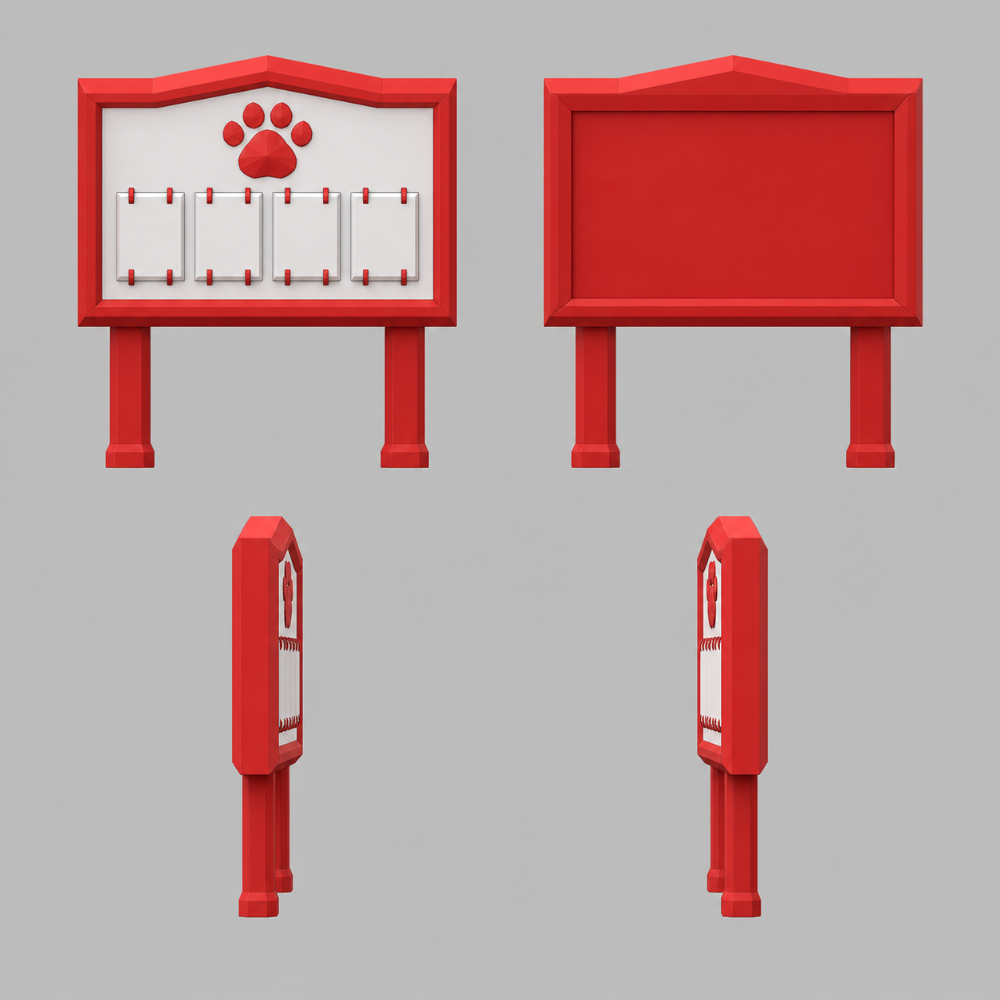
развёртка 4 видов (gpt-image-2)3D-модель: 4 ракурса (Tripo) — клик = полный размер
GLB 538КБ · ▲1784 · мешей 1 · материалов 1 · 0.13×1×0.93 м · 2026-07-15 10:05
Судья: 8/10 ✓ принят (попытка 0)
podium зона финиша · face≤1500
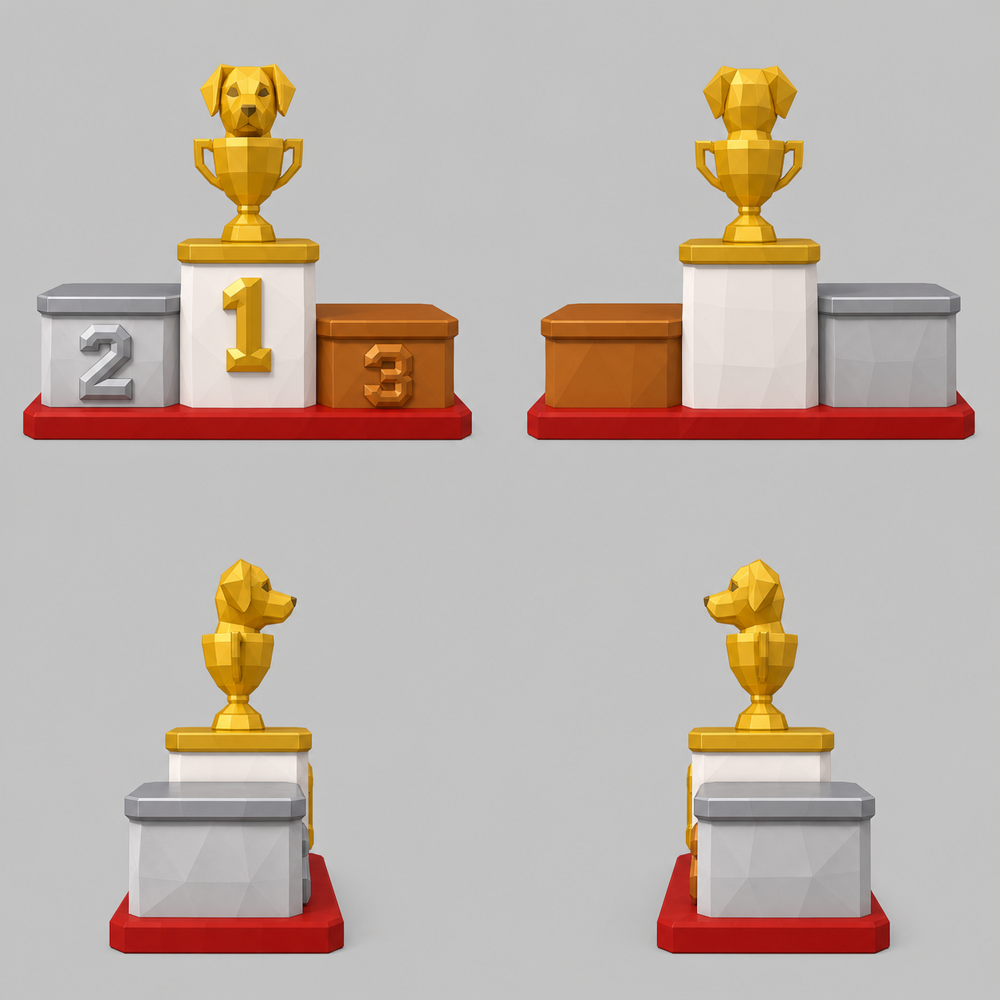
развёртка 4 видов (gpt-image-2)3D-модель: 4 ракурса (Tripo) — клик = полный размер
GLB 422КБ · ▲1289 · мешей 1 · материалов 1 · 0.96×0.88×1 м · 2026-07-15 09:55
Судья: 7/10 ✓ принят (попытка 0)
camera-tower обочина, редко · face≤2500
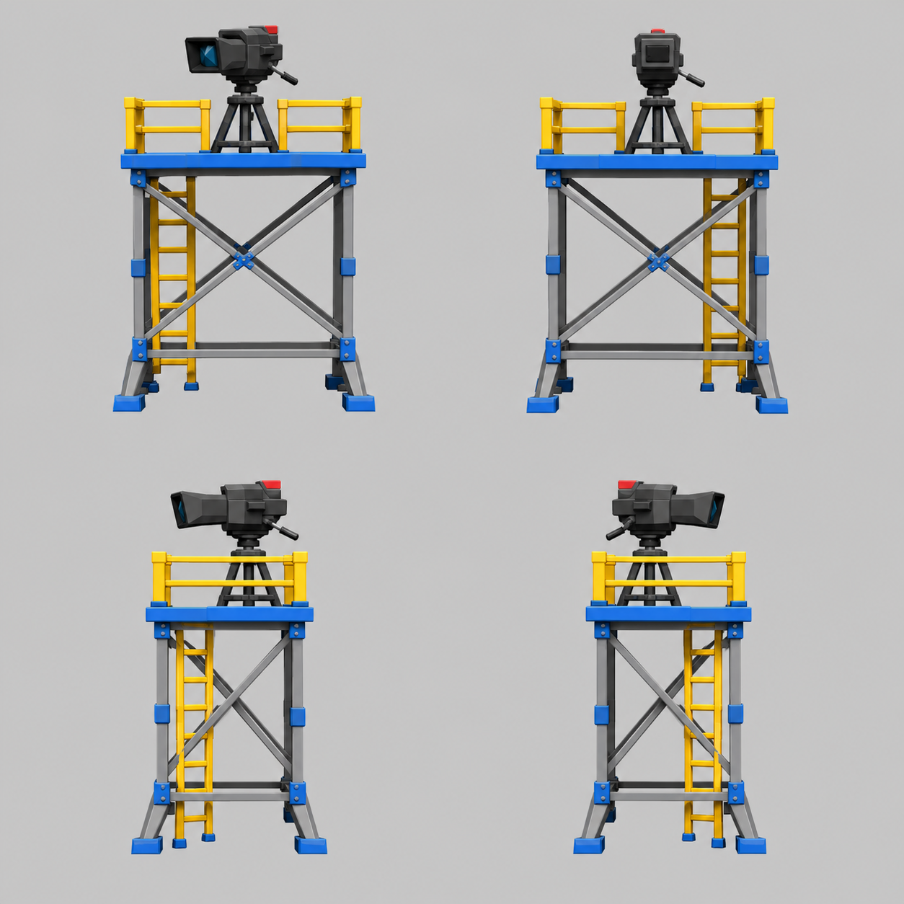
развёртка 4 видов (gpt-image-2)3D-модель: 4 ракурса (Tripo) — клик = полный размер
GLB 743КБ · ▲2221 · мешей 1 · материалов 1 · 0.5×1×0.5 м · 2026-07-15 09:58
Судья: 7/10 ✓ принят (попытка 0)
food-cart дальняя обочина · face≤3000
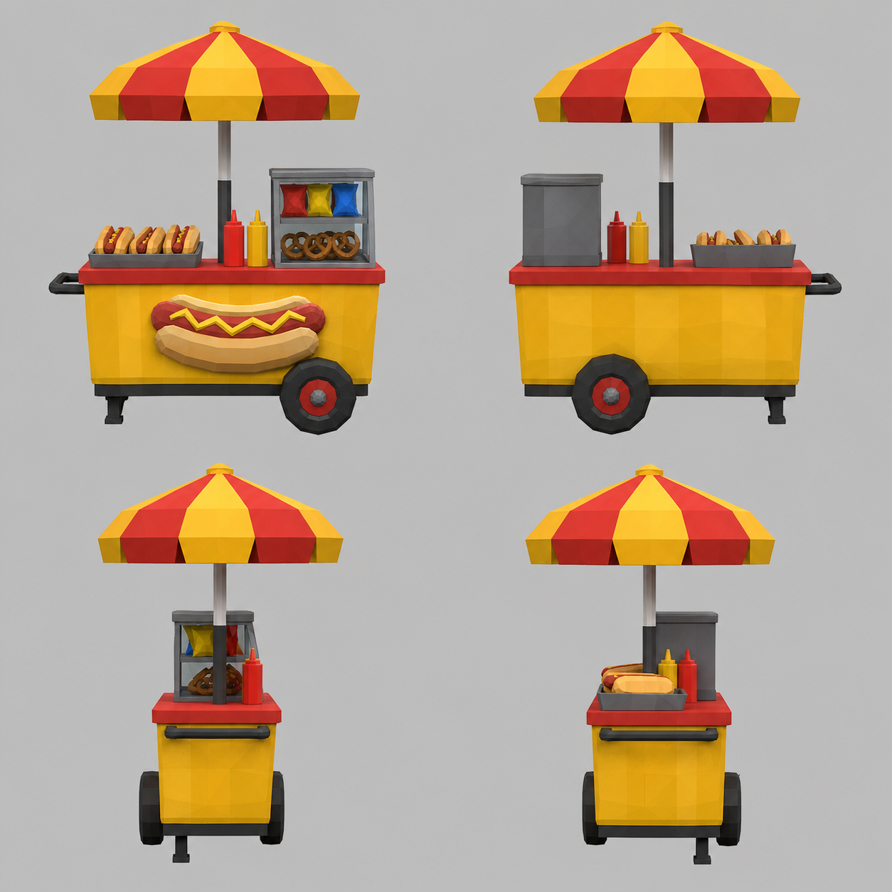
развёртка 4 видов (gpt-image-2)3D-модель: 4 ракурса (Tripo) — клик = полный размер
GLB 609КБ · ▲2743 · мешей 1 · материалов 1 · 0.63×1×0.85 м · 2026-07-15 10:00
Судья: 8/10 ✓ принят (попытка 0)
balloon-arch над трассой, редко · face≤2000
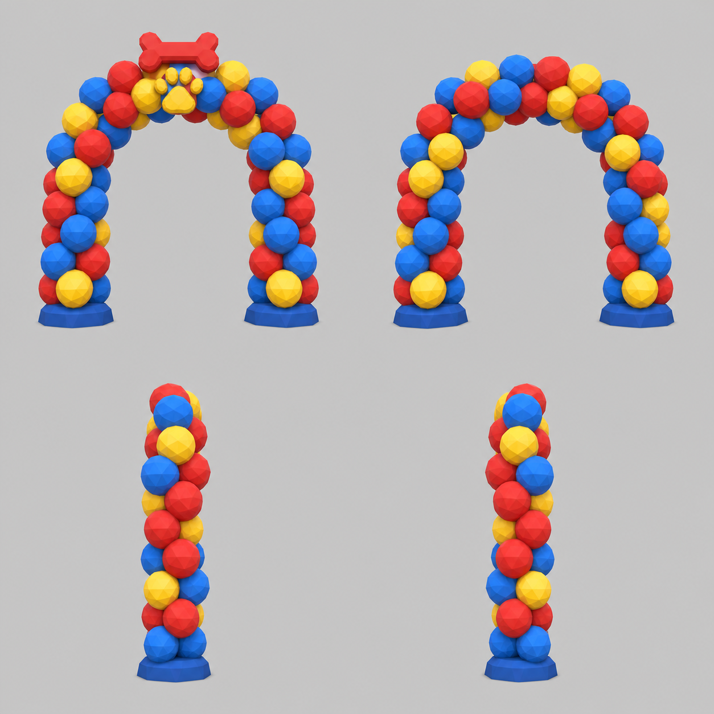
развёртка 4 видов (gpt-image-2)3D-модель: 4 ракурса (Tripo) — клик = полный размер
GLB 607КБ · ▲1938 · мешей 1 · материалов 1 · 0.27×1×0.98 м · 2026-07-15 10:11
Судья: 7/10 ✓ принят (попытка 1)
flag-cluster обочина · face≤1200
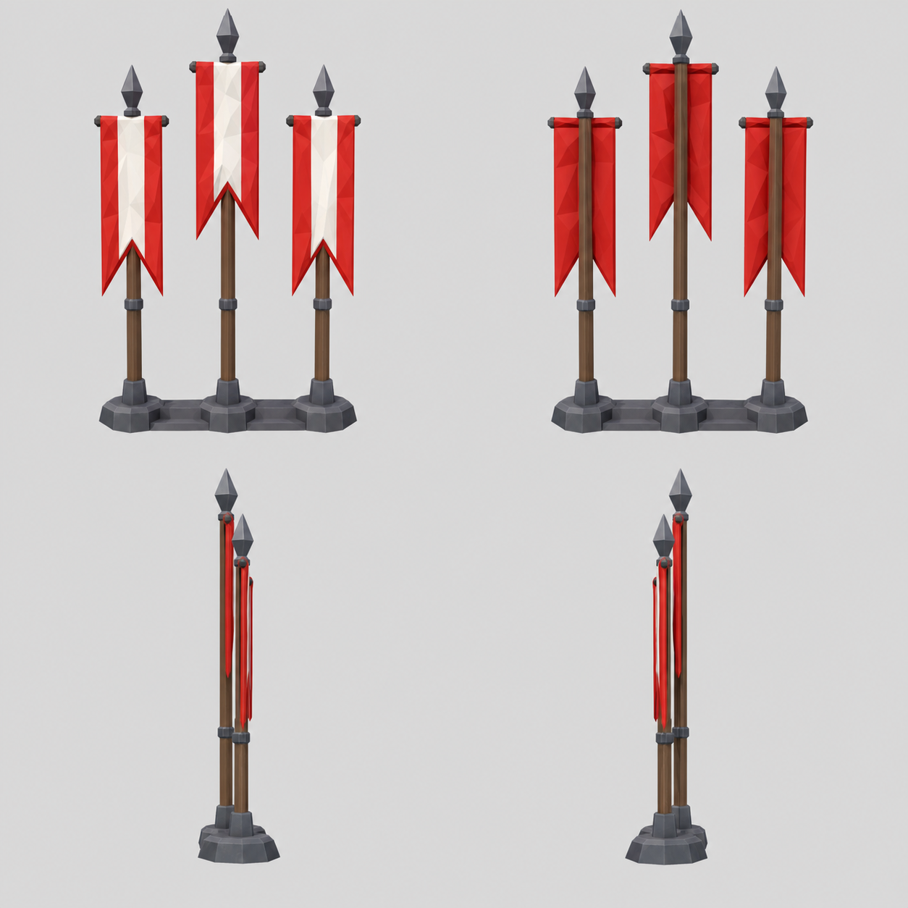
развёртка 4 видов (gpt-image-2)3D-модель: 4 ракурса (Tripo) — клик = полный размер
GLB 476КБ · ▲1070 · мешей 1 · материалов 1 · 0.2×1×0.65 м · 2026-07-15 10:14
Судья: 8/10 ✓ принят (попытка 1)
hay-bale обочина, часто · face≤1200
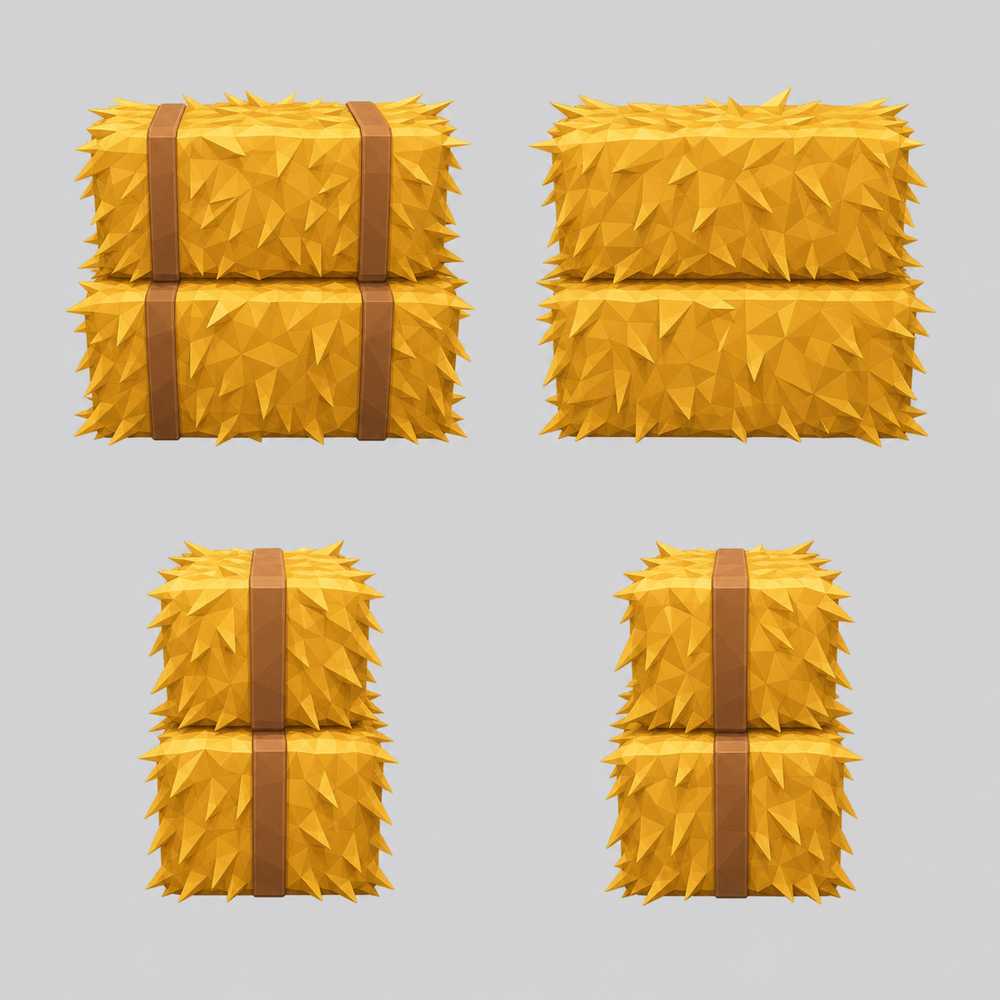
развёртка 4 видов (gpt-image-2)3D-модель: 4 ракурса (Tripo) — клик = полный размер
GLB 352КБ · ▲1064 · мешей 1 · материалов 1 · 0.9×0.94×1 м · 2026-07-15 09:54
Судья: 5/10 ✗ Basic two-bale stacked silhouette is present but hay spikes are mostly collapsed into blobby rounded forms; Front render does not match concept because the two vertical brown straps are missing or barely visible; Side/top show only one strap band instead of the concept's clear strap layout; Texture is flat orange/yellow with little color variation and weak low-poly hay detail; Model is usable only at very small size but lacks the distinctive spiky straw surface (попытка 0)
dog-statue зона старта · face≤2500
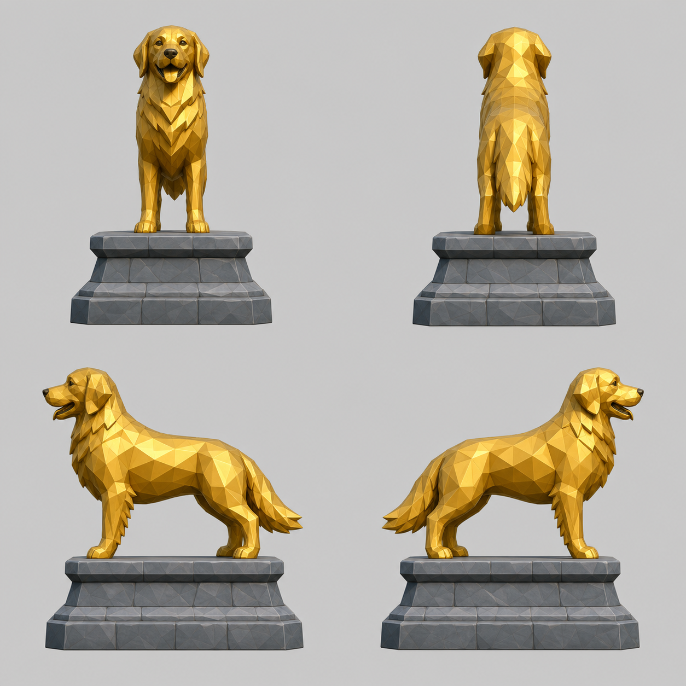
развёртка 4 видов (gpt-image-2)3D-модель: 4 ракурса (Tripo) — клик = полный размер
GLB 584КБ · ▲2383 · мешей 1 · материалов 1 · 0.98×1×0.68 м · 2026-07-15 10:18
Судья: 7/10 ✓ принят (попытка 1)
water-station обочина · face≤1500
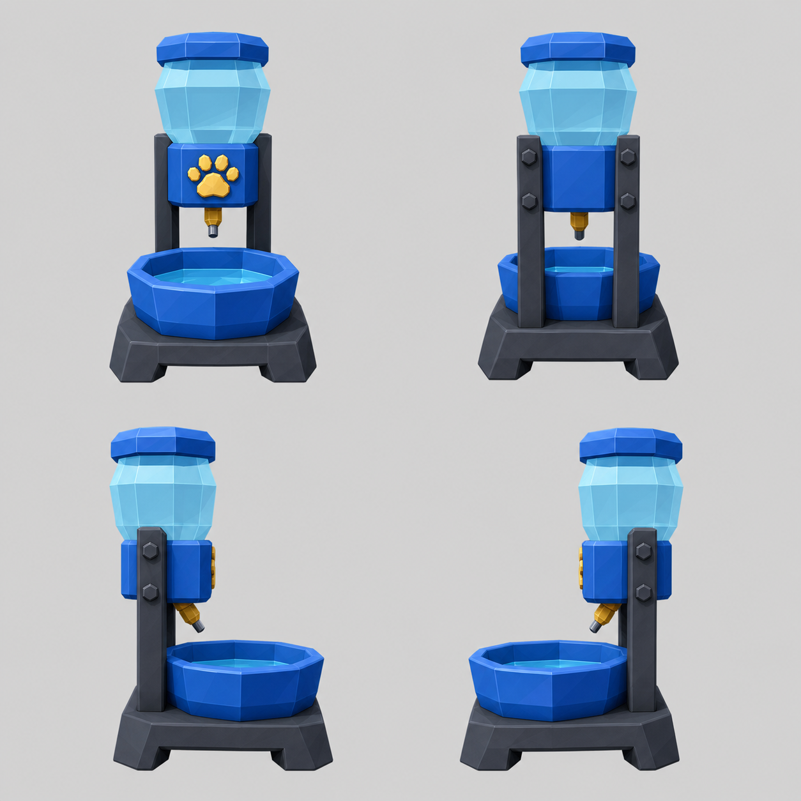
развёртка 4 видов (gpt-image-2)3D-модель: 4 ракурса (Tripo) — клик = полный размер
GLB 525КБ · ▲1294 · мешей 1 · материалов 1 · 0.7×1×0.65 м · 2026-07-15 10:21
Судья: 7/10 ✓ принят (попытка 1)
crate-stack обочина · face≤1800
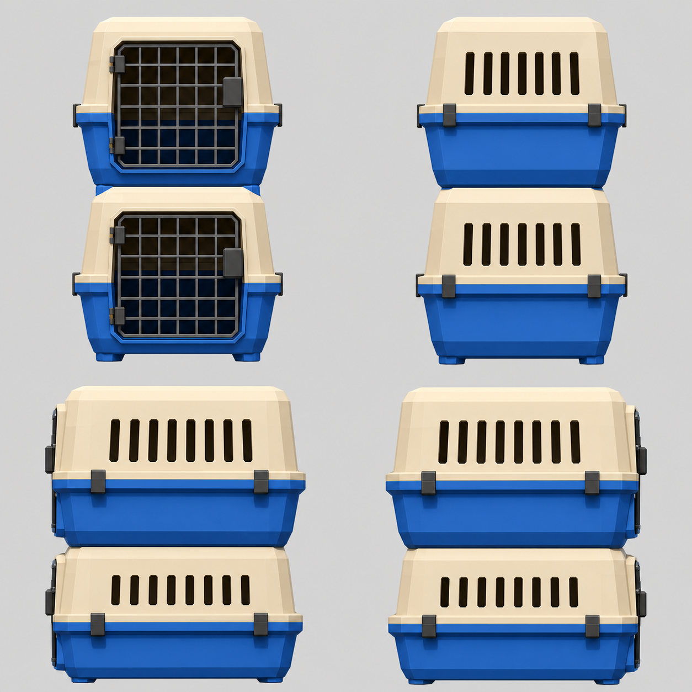
развёртка 4 видов (gpt-image-2)3D-модель: 4 ракурса (Tripo) — клик = полный размер
GLB 611КБ · ▲1643 · мешей 1 · материалов 1 · 0.67×1×0.55 м · 2026-07-15 10:32
Судья: 3/10 ✗ Model incorrectly reconstructs the concept as two stacked carriers/duplicated objects instead of one clear prop; Front cage door and side/back vents collapse into messy triangular internal shards rather than clean bars and slots; Silhouette is lumpy and melted compared with the crisp low-poly carrier shape; Textures are partially washed out, especially the lower crate becoming pale blue instead of saturated blue; Missing clean latch, feet, corner clips, and accurate vent/bar detailing; Top view suggests an incomplete/warped single form rather than a reliable solid game asset (попытка 3)
agility-sign обочина · face≤1000
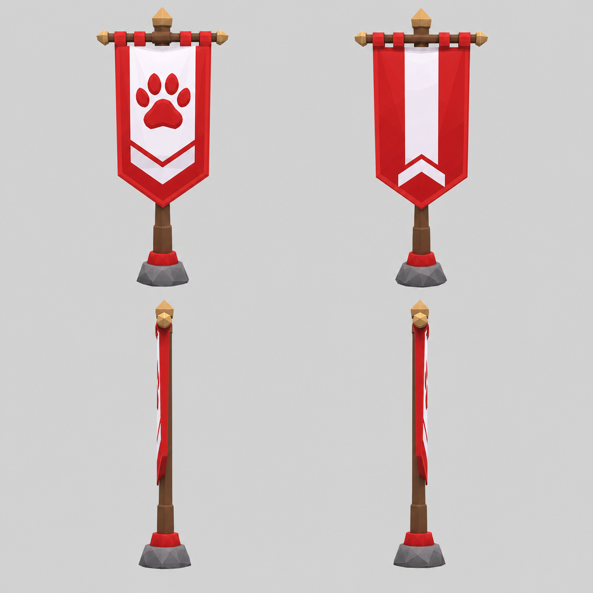
развёртка 4 видов (gpt-image-2)3D-модель: 4 ракурса (Tripo) — клик = полный размер
GLB 495КБ · ▲940 · мешей 1 · материалов 1 · 0.2×1×0.49 м · 2026-07-15 10:36
Судья: 8/10 ✓ принят (попытка 1)
park-bench парк-зона · face≤1200
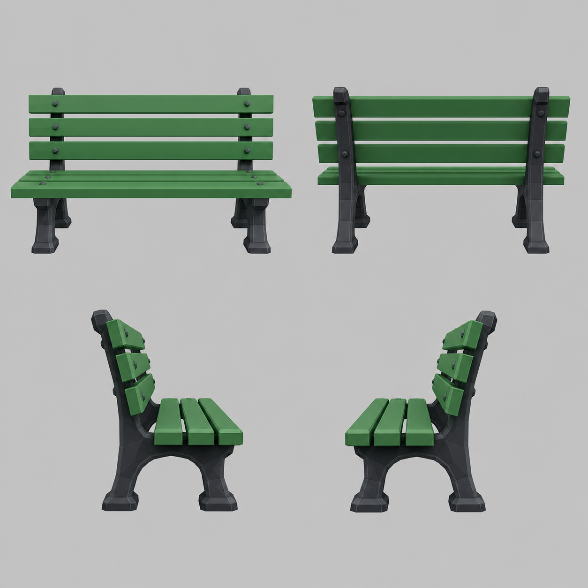
развёртка 4 видов (gpt-image-2)3D-модель: 4 ракурса (Tripo) — клик = полный размер
GLB 480КБ · ▲1000 · мешей 1 · материалов 1 · 0.44×0.61×1 м · 2026-07-15 10:40
Судья: 7/10 ✓ принят (попытка 1)
ice-cream парк-зона, редко · face≤2500
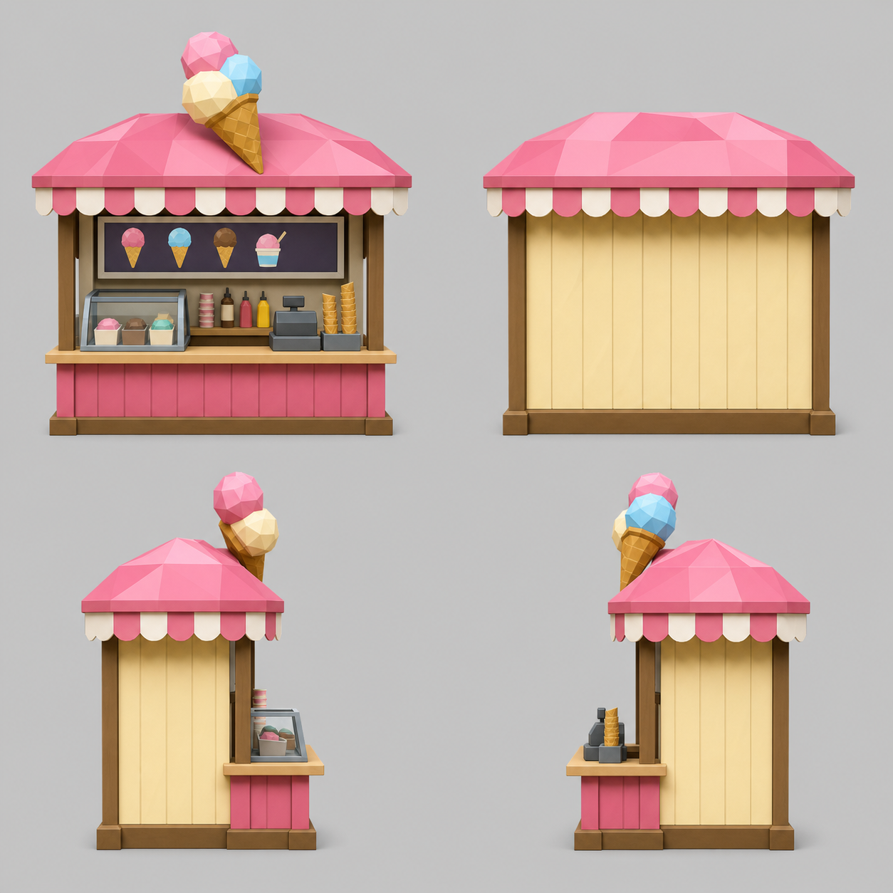
развёртка 4 видов (gpt-image-2)3D-модель: 4 ракурса (Tripo) — клик = полный размер
GLB 674КБ · ▲2243 · мешей 1 · материалов 1 · 0.64×1×0.99 м · 2026-07-15 10:52
Судья: 5/10 ✗ Major duplicated roof ice-cream cone signs; concept has one cone sign but model reconstructed multiple separate cones.; Front/side consistency is off, with the roof sign placement and silhouette not matching the turnaround.; Roof shape is blobby and softened compared with the clean faceted low-poly concept.; Awning scallops and small front details are simplified and less color-accurate than the concept.; Textures are present but somewhat washed and less crisp. (попытка 3)